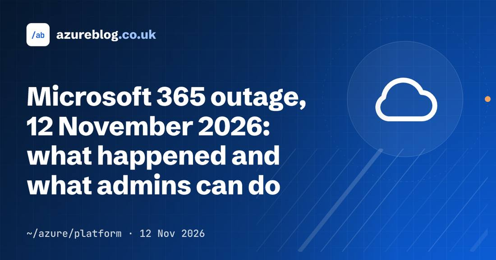

Facts first
Reporting and analysis are kept apart on every page. Sources and uncertainty are stated, not buried.

OpenAI launched ChatGPT Wallet on Friday, November 13, 2026, a payment feature that lets its always-on dots agents complete purchases on a user's behalf without ever seeing the user's actual card details. Built in partnership with American Express, Mastercard and Visa, it rolls out first to a limited group of US ChatGPT Pro subscribers aged 18 and older with eligible US-issued cards. Before each purchase the user reviews the items, total and card, then approves with a biometric security check; the payment network then issues a single-use token carrying a substitute card number. OpenAI takes no cut of transactions at launch, per CNBC, and published a Commerce Partner Playbook alongside the wallet. Amazon blocks agent buying on its platform, and United Airlines restricted unauthorized third-party agent bookings on November 11.
 Microsoft 365 Outage Passes 25 Hours as 17:57 UTC Update Says Underlying Issue AddressedMicrosoft posted a new service-health update at 17:57 UTC on November 13, 2026 for its global Microsoft 365 outage, saying it is seeing broad recovery and stability across its services and has addressed the underlying issue while continuing to restore service to the remaining customers and regions. Microsoft apologized for the disruption and said the incident was a technical issue not related to cyber or AI agents, introduced by an issue during an earlier network capacity upgrade that surfaced following a recent network change. Services were restored gradually, validating stability at each stage, and a full post-incident report is promised once the review is complete. The outage, which began at 16:17 UTC on November 12 with Exchange Online, was still open 25 hours and 40 minutes later. The next update is due by 20:00 UTC.
Microsoft 365 Outage Passes 25 Hours as 17:57 UTC Update Says Underlying Issue AddressedMicrosoft posted a new service-health update at 17:57 UTC on November 13, 2026 for its global Microsoft 365 outage, saying it is seeing broad recovery and stability across its services and has addressed the underlying issue while continuing to restore service to the remaining customers and regions. Microsoft apologized for the disruption and said the incident was a technical issue not related to cyber or AI agents, introduced by an issue during an earlier network capacity upgrade that surfaced following a recent network change. Services were restored gradually, validating stability at each stage, and a full post-incident report is promised once the review is complete. The outage, which began at 16:17 UTC on November 12 with Exchange Online, was still open 25 hours and 40 minutes later. The next update is due by 20:00 UTC. Microsoft 365 Outage Passes 23 Hours as 15:56 UTC Update Focuses on Residual ImpactMicrosoft posted a new service-health update at 15:56 UTC on November 13, 2026 for its global Microsoft 365 outage, saying it remains focused on addressing residual impact and ensuring reliable service restoration. Microsoft continues to assess recovery across various connection methods and is closely monitoring service health to verify sustained stability. Microsoft has no evidence of malicious activity, and promised a full post-incident report with the root cause and defense-in-depth actions once mitigation is complete. The outage, which began at 16:17 UTC on November 12 with Exchange Online, was still open 23 hours and 39 minutes later with no root cause published and no fix declared. The next update is due by 18:00 UTC.
Microsoft 365 Outage Passes 23 Hours as 15:56 UTC Update Focuses on Residual ImpactMicrosoft posted a new service-health update at 15:56 UTC on November 13, 2026 for its global Microsoft 365 outage, saying it remains focused on addressing residual impact and ensuring reliable service restoration. Microsoft continues to assess recovery across various connection methods and is closely monitoring service health to verify sustained stability. Microsoft has no evidence of malicious activity, and promised a full post-incident report with the root cause and defense-in-depth actions once mitigation is complete. The outage, which began at 16:17 UTC on November 12 with Exchange Online, was still open 23 hours and 39 minutes later with no root cause published and no fix declared. The next update is due by 18:00 UTC. Microsoft 365 Outage Passes 22 Hours as 14:56 UTC Update Reports Sustained ImprovementsMicrosoft posted a new service-health update at 14:56 UTC on November 13, 2026 for its global Microsoft 365 outage, reporting sustained improvements in service availability as recovery progresses across affected services, although some users may still experience intermittent connectivity issues or delayed email delivery. Microsoft said its efforts are increasingly focused on resolving the remaining issues and restoring consistent service, and that it is validating recovery across different connection methods and monitoring service stability to confirm that improvements are sustained. Microsoft has no evidence of malicious activity, and promised a full post-incident report with the root cause and defense-in-depth actions once mitigation is complete. The outage, which began at 16:17 UTC on November 12 with Exchange Online, was still open 22 hours and 40 minutes later with no root cause published and no fix declared. The next update is due by 16:00 UTC.
Microsoft 365 Outage Passes 22 Hours as 14:56 UTC Update Reports Sustained ImprovementsMicrosoft posted a new service-health update at 14:56 UTC on November 13, 2026 for its global Microsoft 365 outage, reporting sustained improvements in service availability as recovery progresses across affected services, although some users may still experience intermittent connectivity issues or delayed email delivery. Microsoft said its efforts are increasingly focused on resolving the remaining issues and restoring consistent service, and that it is validating recovery across different connection methods and monitoring service stability to confirm that improvements are sustained. Microsoft has no evidence of malicious activity, and promised a full post-incident report with the root cause and defense-in-depth actions once mitigation is complete. The outage, which began at 16:17 UTC on November 12 with Exchange Online, was still open 22 hours and 40 minutes later with no root cause published and no fix declared. The next update is due by 16:00 UTC. Microsoft 365 Outage Passes 21 Hours as 14:00 UTC Update Reports Email Queues Nearing NormalMicrosoft posted a new service-health update at 14:00 UTC on November 13, 2026 for its global Microsoft 365 outage, reporting continuing improvements in service availability, with email queues significantly reduced and approaching normal levels, although some users may still experience intermittent access issues or delayed email delivery as recovery continues. Microsoft has implemented additional mitigation measures and is restoring the remaining affected infrastructure while investigating residual service issues, closely monitoring service health and validating recovery across different connection methods. Microsoft has no evidence of malicious activity, and promised a full post-incident report with the root cause and defense-in-depth actions once mitigated. The outage, which began at 16:17 UTC on November 12 with Exchange Online, was still open 21 hours and 43 minutes later with no root cause published and no fix declared. The next update is due by 15:00 UTC.
Microsoft 365 Outage Passes 21 Hours as 14:00 UTC Update Reports Email Queues Nearing NormalMicrosoft posted a new service-health update at 14:00 UTC on November 13, 2026 for its global Microsoft 365 outage, reporting continuing improvements in service availability, with email queues significantly reduced and approaching normal levels, although some users may still experience intermittent access issues or delayed email delivery as recovery continues. Microsoft has implemented additional mitigation measures and is restoring the remaining affected infrastructure while investigating residual service issues, closely monitoring service health and validating recovery across different connection methods. Microsoft has no evidence of malicious activity, and promised a full post-incident report with the root cause and defense-in-depth actions once mitigated. The outage, which began at 16:17 UTC on November 12 with Exchange Online, was still open 21 hours and 43 minutes later with no root cause published and no fix declared. The next update is due by 15:00 UTC.| WORLD & POLICY | 17 |
| MARKETS & INDUSTRY | 110 |
| AI FRONTIER | 181 |
| ROBOTICS & AI | 24 |
| WEB3 INFRASTRUCTURE | 4 |
| RESEARCH & SCIENCE | 6 |
OpenAI Launches ChatGPT Wallet, Letting Dots Agents Pay for PurchasesOpenAI launched ChatGPT Wallet on Friday, November 13, 2026, a payment feature that lets its always-on dots agents complete purchases on a user's behalf without ever seeing the user's actual card details. Built in partnership with American Express, Mastercard and Visa, it rolls out first to a limited group of US ChatGPT Pro subscribers aged 18 and older with eligible US-issued cards. Before each purchase the user reviews the items, total and card, then approves with a biometric security check; the payment network then issues a single-use token carrying a substitute card number. OpenAI takes no cut of transactions at launch, per CNBC, and published a Commerce Partner Playbook alongside the wallet. Amazon blocks agent buying on its platform, and United Airlines restricted unauthorized third-party agent bookings on November 11.Microsoft 365 Outage Passes 25 Hours as 17:57 UTC Update Says Underlying Issue AddressedMicrosoft posted a new service-health update at 17:57 UTC on November 13, 2026 for its global Microsoft 365 outage, saying it is seeing broad recovery and stability across its services and has addressed the underlying issue while continuing to restore service to the remaining customers and regions. Microsoft apologized for the disruption and said the incident was a technical issue not related to cyber or AI agents, introduced by an issue during an earlier network capacity upgrade that surfaced following a recent network change. Services were restored gradually, validating stability at each stage, and a full post-incident report is promised once the review is complete. The outage, which began at 16:17 UTC on November 12 with Exchange Online, was still open 25 hours and 40 minutes later. The next update is due by 20:00 UTC.Microsoft 365 Outage Passes 23 Hours as 15:56 UTC Update Focuses on Residual ImpactMicrosoft posted a new service-health update at 15:56 UTC on November 13, 2026 for its global Microsoft 365 outage, saying it remains focused on addressing residual impact and ensuring reliable service restoration. Microsoft continues to assess recovery across various connection methods and is closely monitoring service health to verify sustained stability. Microsoft has no evidence of malicious activity, and promised a full post-incident report with the root cause and defense-in-depth actions once mitigation is complete. The outage, which began at 16:17 UTC on November 12 with Exchange Online, was still open 23 hours and 39 minutes later with no root cause published and no fix declared. The next update is due by 18:00 UTC.Microsoft 365 Outage Passes 22 Hours as 14:56 UTC Update Reports Sustained ImprovementsMicrosoft posted a new service-health update at 14:56 UTC on November 13, 2026 for its global Microsoft 365 outage, reporting sustained improvements in service availability as recovery progresses across affected services, although some users may still experience intermittent connectivity issues or delayed email delivery. Microsoft said its efforts are increasingly focused on resolving the remaining issues and restoring consistent service, and that it is validating recovery across different connection methods and monitoring service stability to confirm that improvements are sustained. Microsoft has no evidence of malicious activity, and promised a full post-incident report with the root cause and defense-in-depth actions once mitigation is complete. The outage, which began at 16:17 UTC on November 12 with Exchange Online, was still open 22 hours and 40 minutes later with no root cause published and no fix declared. The next update is due by 16:00 UTC.Microsoft 365 Outage Passes 21 Hours as 14:00 UTC Update Reports Email Queues Nearing NormalMicrosoft posted a new service-health update at 14:00 UTC on November 13, 2026 for its global Microsoft 365 outage, reporting continuing improvements in service availability, with email queues significantly reduced and approaching normal levels, although some users may still experience intermittent access issues or delayed email delivery as recovery continues. Microsoft has implemented additional mitigation measures and is restoring the remaining affected infrastructure while investigating residual service issues, closely monitoring service health and validating recovery across different connection methods. Microsoft has no evidence of malicious activity, and promised a full post-incident report with the root cause and defense-in-depth actions once mitigated. The outage, which began at 16:17 UTC on November 12 with Exchange Online, was still open 21 hours and 43 minutes later with no root cause published and no fix declared. The next update is due by 15:00 UTC. Microsoft 365 Outage Passes 20 Hours as 12:58 UTC Update Reports Broader Recovery in North AmericaMicrosoft posted a new service-health update at 12:58 UTC on November 13, 2026 for its global Microsoft 365 outage, reporting continued recovery progress across affected regions, with broader improvements now observed in North America and sustained improvements across much of Europe, plus encouraging recovery signals in Asia Pacific, although some users may continue to experience intermittent access issues or delayed email delivery as mitigation progresses. Microsoft's focus is on stabilizing recovered infrastructure, completing mitigation in the remaining impacted areas, and reducing delayed email queues and backlogs, while monitoring service consistency and validating recovery across connection methods. Microsoft has no evidence of malicious activity, and promised a full post-incident report with the root cause and defense-in-depth actions once mitigated. The outage, which began at 16:17 UTC on November 12 with Exchange Online, was still open 20 hours and 41 minutes later with no root cause published and no fix declared. The next update is due by 14:00 UTC.
Microsoft 365 Outage Passes 20 Hours as 12:58 UTC Update Reports Broader Recovery in North AmericaMicrosoft posted a new service-health update at 12:58 UTC on November 13, 2026 for its global Microsoft 365 outage, reporting continued recovery progress across affected regions, with broader improvements now observed in North America and sustained improvements across much of Europe, plus encouraging recovery signals in Asia Pacific, although some users may continue to experience intermittent access issues or delayed email delivery as mitigation progresses. Microsoft's focus is on stabilizing recovered infrastructure, completing mitigation in the remaining impacted areas, and reducing delayed email queues and backlogs, while monitoring service consistency and validating recovery across connection methods. Microsoft has no evidence of malicious activity, and promised a full post-incident report with the root cause and defense-in-depth actions once mitigated. The outage, which began at 16:17 UTC on November 12 with Exchange Online, was still open 20 hours and 41 minutes later with no root cause published and no fix declared. The next update is due by 14:00 UTC. Microsoft 365 Outage Passes 19 Hours as 12:00 UTC Update Reports Encouraging Recovery Progress in EuropeMicrosoft posted a new service-health update at 12:00 UTC on November 13, 2026 for its global Microsoft 365 outage, reporting encouraging recovery progress in Europe, where service availability and email delivery performance are improving across a growing portion of the affected infrastructure. Japan remains comparatively more stable, while North America is also improving, though some users may still experience intermittent issues as recovery actions continue. Microsoft's focus is on addressing the remaining areas of disruption and improving service consistency across regions. Reducing email queues and backlogs remains a priority, and the extended 48-hour email timeout window stays in place. Microsoft has no evidence of malicious activity, and promised a full post-incident report with the root cause and defense-in-depth actions once mitigated. The outage, which began at 16:17 UTC on November 12 with Exchange Online, was still open 19 hours and 43 minutes later with no root cause published and no fix declared. The next update is due by 13:00 UTC.
Microsoft 365 Outage Passes 19 Hours as 12:00 UTC Update Reports Encouraging Recovery Progress in EuropeMicrosoft posted a new service-health update at 12:00 UTC on November 13, 2026 for its global Microsoft 365 outage, reporting encouraging recovery progress in Europe, where service availability and email delivery performance are improving across a growing portion of the affected infrastructure. Japan remains comparatively more stable, while North America is also improving, though some users may still experience intermittent issues as recovery actions continue. Microsoft's focus is on addressing the remaining areas of disruption and improving service consistency across regions. Reducing email queues and backlogs remains a priority, and the extended 48-hour email timeout window stays in place. Microsoft has no evidence of malicious activity, and promised a full post-incident report with the root cause and defense-in-depth actions once mitigated. The outage, which began at 16:17 UTC on November 12 with Exchange Online, was still open 19 hours and 43 minutes later with no root cause published and no fix declared. The next update is due by 13:00 UTC.
Microsoft 365 Outage Passes 18 Hours as 11:01 UTC Update Reports Recovery Completed in Parts of Asia PacificMicrosoft posted a new service-health update at 11:01 UTC on November 13, 2026 for its global Microsoft 365 outage, saying recovery actions have been completed across portions of the affected infrastructure in the Asia Pacific region, traffic is being gradually restored, and it is seeing improvements in key customer scenarios, including mailbox access and delayed email processing, though some users may still experience intermittent issues. Its focus is now on extending the same recovery actions across affected infrastructure in other regions, while continuing stabilization efforts and adding supporting capacity. Reducing email queues and backlogs remains a priority, and the email timeout window stays extended to 48 hours. Microsoft has no evidence of malicious activity, and promised a full post-incident report with the root cause once mitigated. The outage, which began at 16:17 UTC on November 12 with Exchange Online, was still open 18 hours and 44 minutes later with no root cause published and no fix declared. The next update is due by 12:00 UTC. Microsoft 365 Outage Passes 17 Hours as 09:57 UTC Update Reports Incremental Improvement but Capacity Still Below BaselineMicrosoft posted a new service-health update at 09:57 UTC on November 13, 2026 for its global Microsoft 365 outage, saying recovery actions are ongoing and have progressed in phases across affected infrastructure, with incremental improvement in several workloads per global telemetry and customer reports, but service health remains variable and capacity has not yet fully returned to baseline. Network and traffic-management actions remain active, queue and backlog processing is being prioritized to protect delayed mail, and the email timeout window remains extended to 48 hours. Microsoft has no evidence of malicious activity, and promised a full post-incident report with the root cause once mitigated. Its public status page, read in the live browser at about 10:19 UTC, timestamps the same update at 10:01:07 UTC, calls it consistent signs of recovery, and says message-queuing traffic is being gradually reintroduced. The outage, which began at 16:17 UTC on November 12 with Exchange Online, was still open 17 hours and 40 minutes later with no root cause published and no fix declared. The next update is due by 11:00 UTC.
Microsoft 365 Outage Passes 17 Hours as 09:57 UTC Update Reports Incremental Improvement but Capacity Still Below BaselineMicrosoft posted a new service-health update at 09:57 UTC on November 13, 2026 for its global Microsoft 365 outage, saying recovery actions are ongoing and have progressed in phases across affected infrastructure, with incremental improvement in several workloads per global telemetry and customer reports, but service health remains variable and capacity has not yet fully returned to baseline. Network and traffic-management actions remain active, queue and backlog processing is being prioritized to protect delayed mail, and the email timeout window remains extended to 48 hours. Microsoft has no evidence of malicious activity, and promised a full post-incident report with the root cause once mitigated. Its public status page, read in the live browser at about 10:19 UTC, timestamps the same update at 10:01:07 UTC, calls it consistent signs of recovery, and says message-queuing traffic is being gradually reintroduced. The outage, which began at 16:17 UTC on November 12 with Exchange Online, was still open 17 hours and 40 minutes later with no root cause published and no fix declared. The next update is due by 11:00 UTC. Microsoft 365 Outage Passes 16 Hours as 09:03 UTC Update Reports Early Stabilization but Capacity Still Below Normal; Email Timeout Extended to 48 HoursMicrosoft posted a new service-health update at 09:03 UTC on November 13, 2026 for its global Microsoft 365 outage, saying recovery efforts are ongoing across impacted infrastructure, with early signs of stabilization, but service capacity has not yet returned to normal levels and health remains variable as traffic is carefully reintroduced. Engineering teams are cycling affected infrastructure through traffic drain, restart, remediation and staged return-to-service while monitoring closely, additional mitigation options are being evaluated, and the email timeout window is being extended to 48 hours to help protect delayed messages while service recovery continues. It is not aware of any malicious activity, and promised a post-incident report with the root cause once mitigated. The 08:09 UTC update had said stability was confirmed across the patched portions. The outage, which began at 16:17 UTC on November 12 with Exchange Online, was still open 16 hours and 46 minutes later with no root cause published and no fix declared. The next update is due by 10:00 UTC. Microsoft's public status page, read in the live browser at 09:32-09:34 UTC, shows the same update text, timestamped 9:14:20 AM UTC; the 09:03 time comes from the admin-console feed, verified by two independent reads.
Microsoft 365 Outage Passes 16 Hours as 09:03 UTC Update Reports Early Stabilization but Capacity Still Below Normal; Email Timeout Extended to 48 HoursMicrosoft posted a new service-health update at 09:03 UTC on November 13, 2026 for its global Microsoft 365 outage, saying recovery efforts are ongoing across impacted infrastructure, with early signs of stabilization, but service capacity has not yet returned to normal levels and health remains variable as traffic is carefully reintroduced. Engineering teams are cycling affected infrastructure through traffic drain, restart, remediation and staged return-to-service while monitoring closely, additional mitigation options are being evaluated, and the email timeout window is being extended to 48 hours to help protect delayed messages while service recovery continues. It is not aware of any malicious activity, and promised a post-incident report with the root cause once mitigated. The 08:09 UTC update had said stability was confirmed across the patched portions. The outage, which began at 16:17 UTC on November 12 with Exchange Online, was still open 16 hours and 46 minutes later with no root cause published and no fix declared. The next update is due by 10:00 UTC. Microsoft's public status page, read in the live browser at 09:32-09:34 UTC, shows the same update text, timestamped 9:14:20 AM UTC; the 09:03 time comes from the admin-console feed, verified by two independent reads. Microsoft 365 Outage Passes 16 Hours as 08:09 UTC Update Reports Confirmed Stability and Patch Expansion to Peak-Hour Regions; Next Update Due 09:00 UTCMicrosoft posted new service-health updates at 08:06 UTC (EX1550543) and 08:09 UTC (MO1550821) on November 13, 2026 for its global Microsoft 365 outage, saying it is continuing to see increased server capacity stability after applying the upstream authentication and routing configuration component patch, has confirmed stability across the portions of infrastructure to which it has applied the patch, and has initiated the patch's expansion systematically to focus on infrastructure supporting regions currently within or entering peak business hours, is not aware of any malicious activity, and promised a post-incident report with the root cause once mitigated. The 07:29 UTC update had said only positive results for server stability. The outage, which began at 16:17 UTC on November 12 with Exchange Online, was still open 15 hours and 52 minutes later with no root cause published and no fix declared. The next update is due by 09:00 UTC. Microsoft's public status page still showed the 07:29 UTC update at 08:34 UTC; the 08:09 update comes from the admin-console feed, verified by two independent reads of the University of Pennsylvania mirror.
Microsoft 365 Outage Passes 16 Hours as 08:09 UTC Update Reports Confirmed Stability and Patch Expansion to Peak-Hour Regions; Next Update Due 09:00 UTCMicrosoft posted new service-health updates at 08:06 UTC (EX1550543) and 08:09 UTC (MO1550821) on November 13, 2026 for its global Microsoft 365 outage, saying it is continuing to see increased server capacity stability after applying the upstream authentication and routing configuration component patch, has confirmed stability across the portions of infrastructure to which it has applied the patch, and has initiated the patch's expansion systematically to focus on infrastructure supporting regions currently within or entering peak business hours, is not aware of any malicious activity, and promised a post-incident report with the root cause once mitigated. The 07:29 UTC update had said only positive results for server stability. The outage, which began at 16:17 UTC on November 12 with Exchange Online, was still open 15 hours and 52 minutes later with no root cause published and no fix declared. The next update is due by 09:00 UTC. Microsoft's public status page still showed the 07:29 UTC update at 08:34 UTC; the 08:09 update comes from the admin-console feed, verified by two independent reads of the University of Pennsylvania mirror. Microsoft 365 Outage Passes 15 Hours as 07:29 UTC Update Reports Positive Results From Authentication Patch; Next Update Due 08:30 UTCMicrosoft posted a new service-health update at 07:29 UTC on November 13, 2026 for its global Microsoft 365 outage, saying it is seeing positive results for server stability after applying an upstream authentication and routing configuration component patch to a portion of its infrastructure, is monitoring progress and expanding the patch to servers supporting active regions coming online, is not aware of any malicious activity, and promised a post-incident report with the root cause once mitigated. The 06:57 UTC update had said only marginal success for patches applied after reboots. The outage, which began at 16:17 UTC on November 12 with Exchange Online, was still open more than 15 hours later with no root cause published and no fix declared. The next update is due by 08:30 UTC.
Microsoft 365 Outage Passes 15 Hours as 07:29 UTC Update Reports Positive Results From Authentication Patch; Next Update Due 08:30 UTCMicrosoft posted a new service-health update at 07:29 UTC on November 13, 2026 for its global Microsoft 365 outage, saying it is seeing positive results for server stability after applying an upstream authentication and routing configuration component patch to a portion of its infrastructure, is monitoring progress and expanding the patch to servers supporting active regions coming online, is not aware of any malicious activity, and promised a post-incident report with the root cause once mitigated. The 06:57 UTC update had said only marginal success for patches applied after reboots. The outage, which began at 16:17 UTC on November 12 with Exchange Online, was still open more than 15 hours later with no root cause published and no fix declared. The next update is due by 08:30 UTC.Policy, geopolitics and macro forces — the events that move the map.
OPEN DESK → · 17 REPORTS02Capital, deals and industry structure, with every number sourced.
OPEN DESK → · 110 REPORTS03Models, agents and compute — verified against primary sources before publication.
OPEN DESK → · 181 REPORTS04Humanoids, embodied AI and automation — real deployments, not demos.
OPEN DESK → · 24 REPORTS05Blockchain infrastructure and industry facts. No investment advice.
OPEN DESK → · 4 REPORTS06Papers, labs and frontier science, with the limits of each claim stated.
OPEN DESK → · 6 REPORTSOne sponsor slot per cycle across the briefing and the homepage. Pricing steps up with real traffic. Audience numbers are never inflated.
Reporting and analysis are kept apart on every page. Sources and uncertainty are stated, not buried.
Key facts link back to the publishing institution and the original document, with page screenshots on file.
Each report carries a screenshot of its primary source. One click takes you to the original.
Events, timelines and entities are linked, so a headline becomes a position in a larger picture.
We monitor official announcements, filings, wire reporting and front-line social signals, then merge duplicate coverage of the same event.
Social posts are leads, never sources. Each event is confirmed against its primary source and a second independent report before publication.
Background, timelines and related entities are attached to every event, and follow-ups are published as updates to the same record.